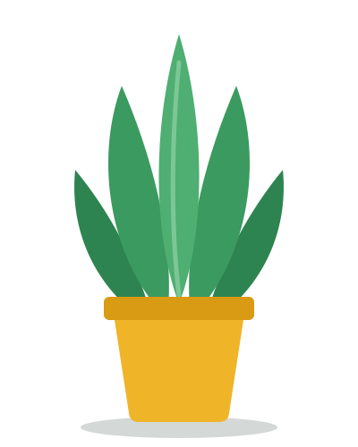
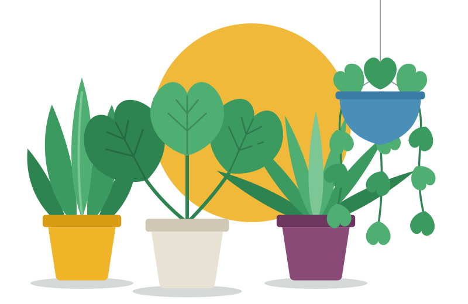
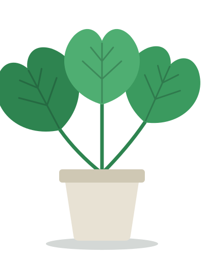
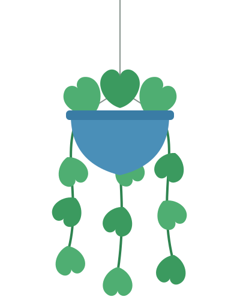
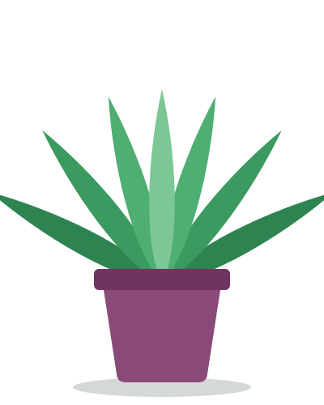

Snake plant
Low light, very forgiving. It copes with north-facing rooms, long holidays and the odd forgotten week. Wipe the leaves now and then.
- Water every 2 to 3 weeks
- Grows up to 90 cm
Fernwick is a neighbourhood nursery. Tell us which window you are working with and we will hand you something that will stay alive.
Find your plant
Directions are for the northern hemisphere.
Every plant here spends at least six months in our greenhouse before it reaches the shelf.
Showing 4 of 4 plants

Low light, very forgiving. It copes with north-facing rooms, long holidays and the odd forgotten week. Wipe the leaves now and then.

Bright, indirect light. Give it a window with a sheer curtain and room to spread.

Medium light, and happy on a high shelf or in a hanging pot. The vines can reach two metres.

Direct sun. Keep it on the sunniest sill you have and let the soil dry out fully between drinks.
The short version for each plant above.
| Plant | Light | Water | Repot |
|---|---|---|---|
| Snake plant | Low to bright | Every 2 to 3 weeks | Every 3 to 4 years |
| Monstera | Bright, indirect | When the top 5 cm is dry | Every 2 years |
| Pothos | Low to medium | Every 1 to 2 weeks | Every 2 to 3 years |
| Aloe vera | Direct sun | Every 3 weeks | When crowded |
Push a finger two knuckles deep. If it feels damp, wait a few more days.
Let water run out of the drainage holes, then empty the saucer so roots do not sit in it.
Give it a quarter turn each week so every side gets light and the plant grows evenly.
14 Mill Lane, Riverside. Bring a photo of your window and we will help you choose.